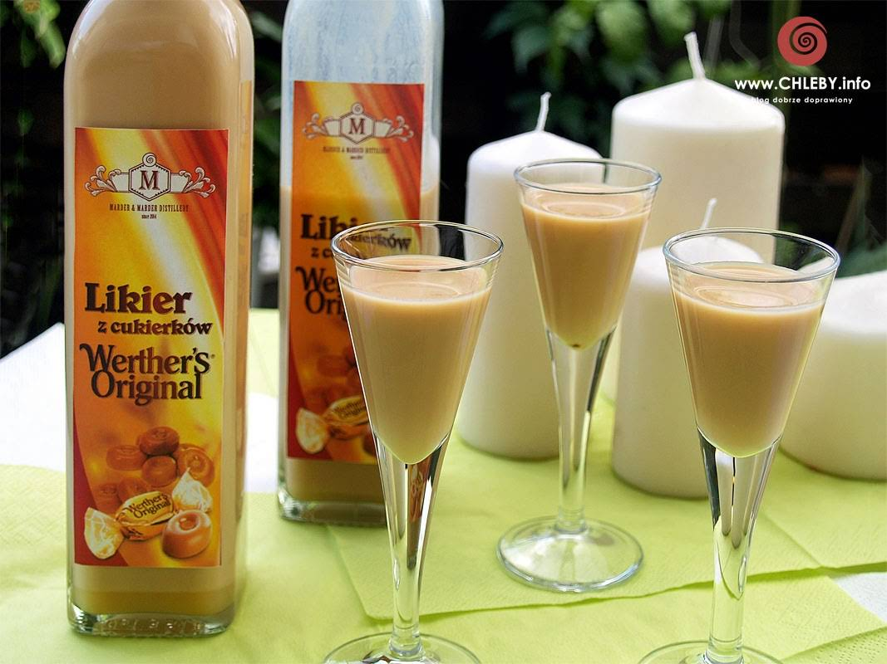

Jestes LIKIEREM

Sa fajne likierki np kokosowe czy toffi
Fajnie sobie od czasu do czasu wypic dla sama taki kieliszeczek
No ale wiecej sie wypic nie da, wiec troche traci role alkoholu do upicia
Ludzie Cie lubia, ale moze sie zdarzyc ze nie masz takich przyjaciol od serca
Masz wiele znajomych i jestes ogolnie lubiana osoba, ale moze ci brakowac kogos
Kto bedzie cie znal najlepiej i rozumial
Jednak jesli masz taka osobe to wszystko jest super
Pamietaj, ze czasem warto kogos lepiej poznac nie tylko na chwile